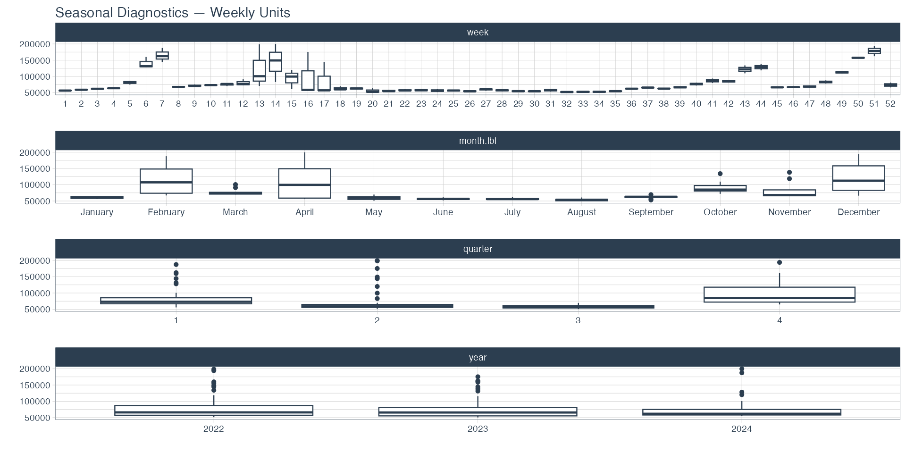
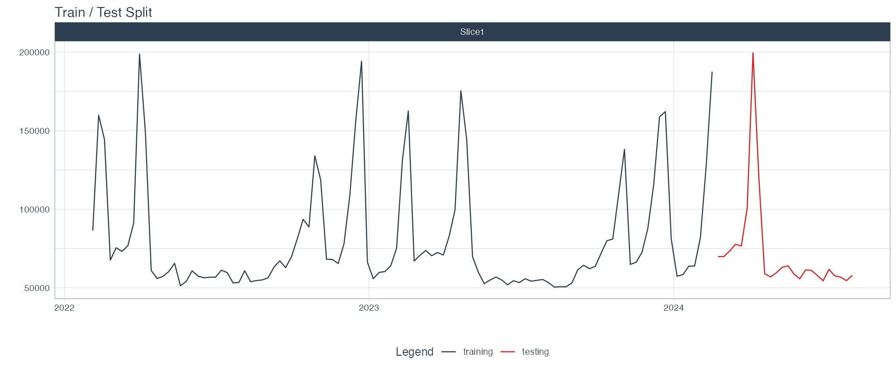

The shape of a forecasting project matters as much as the model choice. Here's how I scoped the problem, chose the candidates, and built the pipeline end-to-end — with the reasoning that went into every decision.
Two and a half years of weekly observations (131 rows) covering early 2022 through August 2024. Six predictors plus the target:
| Column | Description |
|---|---|
weekly_units | Units shipped that week — the forecast target. |
is_peak_period | Binary flag for holiday / peak demand weeks. |
avg_temp_f | Regional weekly average temperature (°F). |
transport_cost_idx | Index of regional transportation / fuel costs. |
price_index | Consumer price index. Not used — slow-moving macro feature, overfit risk on a short series. |
local_unemp_rate | Local unemployment rate. Not used — same reasoning. |

Three classical modeltime candidates, all sharing a single recipe with
three external regressors (is_peak_period, avg_temp_f,
transport_cost_idx). Sharing the recipe keeps the three-way comparison
apples-to-apples on architecture — not on preprocessing.
arima_reg(seasonal_period = 52). The classical baseline. ARIMA
handles the seasonal backbone; the xregs anchor peak weeks it otherwise couldn't see.
arima_boost() / auto_arima_xgboost. ARIMA for seasonality + trend,
XGBoost learning non-linear residual structure from the regressors. Good architecture
when you suspect interactions — cold week × peak week, that kind of thing.
prophet_reg(seasonality_yearly = TRUE). Additive trend + yearly
seasonality + regressor effects. Designed exactly for a holiday-driven business
series like this one.
With 131 rows of training data, a deep-learning model would memorize the two February peaks. The best model here turned out to be the simplest of the three. Discipline beat cleverness — a pattern I'll keep reaching for.
Time series data can't be split randomly. Random splits train on the future and test on the past, which defeats the entire purpose of forecasting. The right pattern is a time-based split: the most recent window is held out as a test set, everything prior becomes training data.
splits <- center_data %>%
time_series_split(
date_var = date,
assess = "24 weeks",
cumulative = TRUE
)
All three candidates get ranked on the standard modeltime accuracy metrics — MAE, MAPE, SMAPE, MASE, RMSE, R². I select on RMSE and report MAPE. Here's why.
The ops team thinks in percentages, but the overtime budget thinks in absolute units. RMSE punishes the big peak-week misses more than MAPE does, and those are the misses that actually cost money. So the selection metric matches the cost structure; the reporting metric matches the audience. Claude tried to talk me into picking on MAPE early in the planning chat. I pushed back. The disagreement ended up sharpening the spec — see the about page for more on how I worked with AI.
Whichever candidate wins goes through the same path: refit on full data, extract the
workflow, wrap in vetiver_model(), pin locally, generate a Docker image,
and pin to S3 for graded hold-out scoring.
best_fit <- refit_tbl %>% pluck(".model", 1)
deployable_model <- vetiver_model(
best_fit,
model_name = "kal79" # drives the pin name on every board
)
model_board <- board_folder("models")
model_board %>% vetiver_pin_write(deployable_model)
vetiver_prepare_docker(model_board, "kal79")
One real footgun: if you fit a bare parsnip spec instead of a workflow,
vetiver_model() errors out on the modeltime engine bridge because it has
no describe() method for it. Always wrap specs in
workflow() %>% add_recipe() %>% add_model() %>% fit().
Prophet (and any model that uses external regressors) needs those regressors to exist
for the forecast horizon. modeltime_forecast(h = "24 weeks") on its own
builds a future frame with only date — Prophet refuses to predict.
The fix is to populate each regressor with a sensible prior:
is_peak_period: seasonal-naive by ISO week. If ISO-week 6 was a peak week in 2024, it's a peak week in 2025. The holiday calendar doesn't move much.avg_temp_f: same seasonal-naive pattern. Last year's week-N average is a strong prior.transport_cost_idx: last-observation carried forward. Over 24 weeks the LOCF approximation is fine for a slow-moving index.The accuracy table, the forecast overlays, and the forward forecast live on the results page.
See the results →